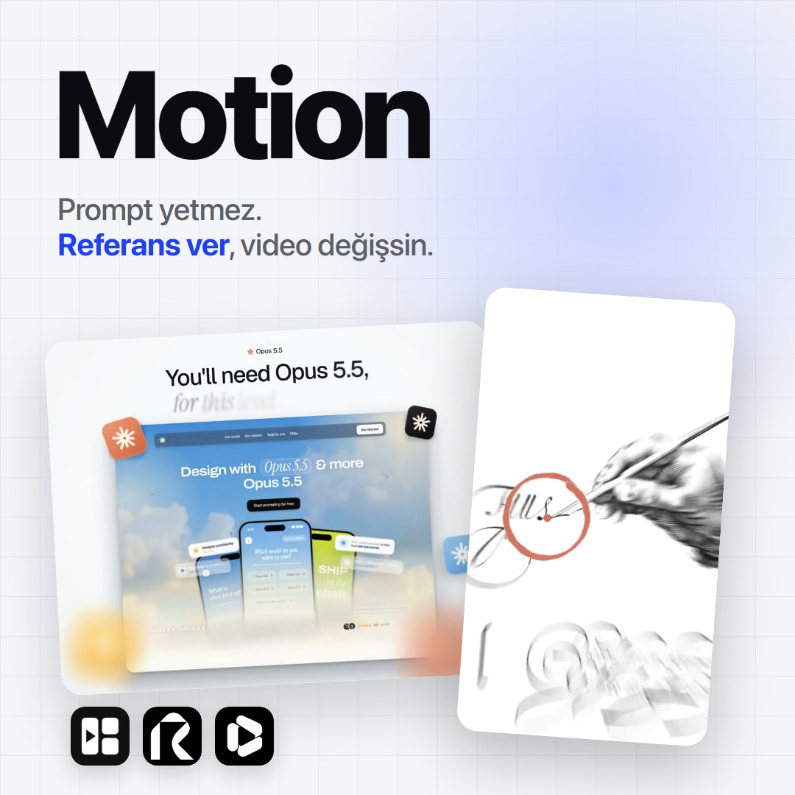
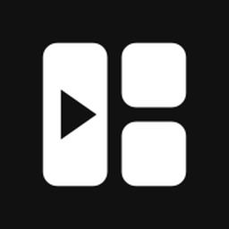
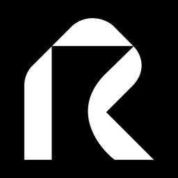
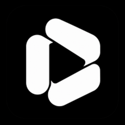

Prompt yetmez, referans ver
Yapay zekâya videoyu yalnız yazıyla tarif edersen sıradan bir sonuç alırsın. Referans video, referans görsel ve ölçülü bir prompt verdiğinde çıktı bambaşka olur. Aşağıda iki gerçek örnek, promptları ve üç site var.
Örnekleri gör ↓İçerik üretirken en sık yapılan hata
Promptu yalnız yazı olarak verip iyi bir video beklemek. Model senin kafandaki videoyu göremez, sadece kelimeleri görür.
- Sadece yazıyla tarif etmek"Dinamik, premium bir tanıtım videosu yap" cümlesini her model farklı anlar. Zamanlamayı, geçişi ve fontu göremediği için ortalama bir şey üretir.
- Sıfat verip ölçü vermemek"Hızlı", "şık", "akıcı" ölçü değildir. Saniye, piksel, renk kodu ve çekim süresi vermezsen model tahmin eder.
- Yasakları yazmamakNeyi istemediğini söylemezsen parlama efektleri, bej "sanatsal" görünüm, gereksiz etiketler gibi bilinen kalıplar geri gelir.
- Sonucu tek seferde beklemekBirkaç kare görmeden tam videoyu almak, hatayı en pahalı yerde yakalamaktır.
Doğrusu: referansla çalış, promptu güçlendir
- Referans video ekleBeğendiğin bir videoyu ekle. Modelden çekim sürelerini, geçişleri, fontları ve ritmi incelemesini iste. Birebir kopya değil: tekniği ödünç alıp tasarımı kendisinin yapmasını söyle.
- Referans görsel ve marka dosyalarını verLogo, renk kodları, ürün ekran görüntüleri, beğendiğin bir kare. Model ne görürse onu kullanır, görmediğini uydurur.
- Sitenin linkini verÜrünün ya da sayfan varsa linkini ver. Claude Code sayfayı açıp ekran görüntüsünü kendisi alır, videoyu senin gerçek arayüzünle kurar.
- Promptu bölümlere ayırGirdiler, yön, zaman planı, yapım adımları, dikkat edilecekler ve başlangıç. Birinci örnek tam bu düzende yazılmış.
- Her şeyi ölçSaniye saniye sahne planı, piksel boyutları, renk kodları, kamera açısı. Ne kadar ölçü verirsen model o kadar az tahmin eder.
- Yasak listesi yazKesme, parlama, ekrana gereksiz yazı... İstemediğin her şeyi tek satırda say.
- Önce kareleri isteRender almadan önce belirli saniyelerden kareler göstermesini iste. Onay verdikten sonra tam videoyu çıkar.
Videoyu dosya olarak almak için kod çalıştırabilen bir araç gerekir (örneğin Claude Code). Sohbet penceresinde çoğu zaman yalnız canlı önizleme alırsın.
Örnek 1: Sayfanın üstünde 3D kamera uçuşu
Bir açılış sayfasının üstünde tek, kesintisiz bir kamera hareketi. Prompt senden sayfanın linkini istiyor, sayfayı yakalayıp 3D sahneye çeviriyor. Dikkat et: her şey saniye, piksel ve açıyla tarif edilmiş, yasaklar tek satırda yazılmış.
Prompt: @twoclipping, Prompt Motion üzerinden.
<inputs> Ask me for: my landing page link, my brand name and logo mark, a two-part closing line (a statement, then a short italic tail), and a 15 second track (optional). </inputs> <direction> A 14.5 second 3D fly-over of my landing page, 1440x1152 at 60fps. The page lies flat on a bright studio floor (#f9fbfb in the middle, #f2f3f6 in the corners) with a soft wide shadow around it and 24px rounded corners. One continuous camera, never a cut: it starts low over the hero and glides backwards down the page at one steady speed while looking up it, rises straight overhead to show the whole page as one strip, dives into the hero and lands it as a card under a two-line title. Focus is razor thin in front of the subject and almost none behind it, so everything near the lens melts. Cards float a little above the page with soft shadows; photos, chips and the testimonial lift off and stand up toward the lens as the camera passes them. Four small tiles of my logo lift off beside the hero button and stay with the film until the end card. The title is Geist 500, the italic tail Instrument Serif. Banned: cuts, crossfades, stops or surges in the glide, the camera turning or swinging sideways, zooming in and back out, glows, any text laid over the page before the end card. </direction> <structure> 14.5 seconds: flight 0-8.2s, rise 7.75-9.25s, overhead 9.25-9.47s, dive 9.47-9.97s, title card 9.97-14.5s. The camera 56° off straight-down and 1360px from the point it looks at, centred on the top half of the hero, the phone or product mockup sharp, four 32px logo tiles beside the button → 0-0.6: the glide eases in from rest → 0.1-1.35: the tiles lift, grow to 140-200px and hang just outside the page's top corners while the hero's chips rise to 60-80px and stand up 30° → 1.25-1.6: the glide doubles to cruising speed as the hero falls behind → 1.6: the second section's title passes the centre of the frame, its photos blurred near the lens → 1.35-2.7: that section's main photos lift to 100-130px and stand up 46°, two of its chips fly up to about 200px, stand up 54° and pass the left and right edges at 2.5 → 1.2-2.4: the tiles trail the camera 300px down the page, then drift out of the top → 3.0-7.3: every following section passes through at the same steady speed, each one sharp as it crosses the middle of the frame and soft below it; a logo tile drifts past the left edge close and blurred at 5.4 → 5.45-6.3: the testimonial card rises from 22 to 112px, stands up 30° and shows a 34px white edge → 7.3-8.2: the glide eases off as the footer arrives, the footer title sharp at 8.0 → 7.75-9.25: the rise, zooming out at an even rate while the tilt flattens (8.15-8.95) and the page's bottom edge settles 42px above the frame bottom → 9.25-9.47: the whole page as one centred strip, creeping 3.5% closer → 9.47-9.97: the dive, the page's top edge pinned to the frame top while it grows, everything below the hero fading out, then the top drops to y 283 so the hero lands as a 1018px wide card with 38px corners and a soft shadow; two logo tiles sit on its top corners, one crisp at the right edge, two huge soft blurs drift in at the bottom corners → 10.02: a white badge pill (logo + brand, 21px) fades in at y 44 → 10.12: line 1 at 74px, one word every 0.06s → 10.36: the italic tail at 82px in grey #8b8b92, one word every 0.05s, each word rising 16px out of a 12px blur in 0.34s → 10.6-14.5: hold, the card creeping 2% closer, the tiles drifting a few px. </structure> <build> 1. Open my link in headless Chromium (Playwright) at 1440px wide, device scale 2, and scroll to the bottom once so lazy images and scroll animations finish. Mark the pieces that lift (cards, phone or product mockups, chips, feature photos, the testimonial, the hero button) with data-layer. Screenshot the full page with them hidden, then each piece alone on a transparent background with 28px padding, and save every piece's page position to a JSON. 2. One WebGL2 film page, 1440x1152, every frame computed from time inside seek(t): no timers, no CSS transitions. The page is a textured quad on the floor and each piece its own quad at its height, drawn lowest first with no depth buffer. Use mipmaps and 16x anisotropic filtering or the far text shimmers. 3. Drive the camera from one speed curve, never from a position key every half second. Focal length 1880px, 56° tilt, distance easing out from 1360 to 1700px and never back in, no turning. Speed down the page as a share of cruise (cruise is about 770 page px/s): 0 at 0s, 0.5 by 0.6s, held at 0.5 to 1.25s, 1.0 by 1.6s, held between 0.94 and 1.1 to 7.3s, then easing to 0.12 by 8.3s. Integrate it into the page position. 4. Depth of field per pixel: blur radius = 75 x (focus - depth) / depth in front of the focus and 6 x (depth - focus) / depth behind it, capped at 120px, 40 taps on a golden-angle disc, each tap read from a mip level matched to the blur. Keep the focus on whatever crosses the middle of the frame. 5. A lifted piece stands up by turning about its own middle, top edge rising toward the lens. Each casts a shadow on whatever is under it: the same picture in flat #1a2133, offset (0.10z, 4 + 0.36z), blurred 7 + 0.5z, 26% opacity. 6. Rise: zoom out in log scale with a smooth trapezoid speed (speeding up 7.75-8.35s, even 8.35-8.95s, slowing to a stop at 9.25s) and hand the glide over to a camera that holds the page's bottom edge at that 42px line from 8.3 to 8.65s. Dive: log scale on a quadratic ease in-out, then solve the look-at point from the pinned edge. A rounded-rect mask morphs from the full page to the hero, 24px to 38px corners. 7. Render with Playwright on the real GPU (--use-angle=d3d11 --enable-gpu --ignore-gpu-blocklist): 60fps, 16 subframes across 0.7 of a frame for motion blur, H.264 MP4. The track's hit goes on 9.97s, whooshes on 8.66 and 9.80. </build> <gotchas> If you can't run code on my computer, tell me straight away that you can only make a live preview here and that the MP4 needs Claude Code. Phones or cards that fade out with transparency show whatever is behind them, so fade them into the haze colour first and only cut to transparent at the very end. Keep most lifts tiny (20-40px) and lock the page before timing anything, because any change in a section's height shifts everything after it. Before the final render, measure a quick 30fps preview with optical flow: the speed down the page must never dip and the zoom must never turn into a zoom-in during the flight. </gotchas> <start> Ask me for the inputs, capture my page, then show me stills at 0, 1.6, 2.5, 5, 6.5, 9.3 and 11 seconds before you render. </start>
Claude Code'a yapıştır. Senden sayfanın linkini, marka adını, logonu ve kapanış cümleni isteyecek.
Örnek 2: Gravür tarzında hızlı reklam
Prompt kısa ama yanında bir referans video var. İşi yapan o: model çekim sürelerini, geçişleri ve fontları referanstan öğreniyor, tasarımı kendisi yapıyor.
Prompt: @LexnLin, Prompt Motion üzerinden.
Make a fast-paced ad for Claude, about 10–15 s (closer to 15). Reference video attached. 1. research: - Study Claude's earlier brand designs first. - Find every photo and asset that fits: artistic, editorial, whatever the idea needs. 2. design/direction - An art reimagine: bold, light mode. - Clean and perfect: no beige "artsy" look, no eyebrow labels. - Paint elements on top of the images. - Above all: fast-paced and very creative. 3. rules - No slop. Study the reference closely: smoothness, timing, shot durations, fonts, elements. - Take some inspiration and borrow techniques, but change the design overall, it should look like something you did completely on yourself with your own taste - Every morph has to be perfect. ideas: (since everything moves fast) - Clean, varied Claude SVG animations - Images small, bigger, several at once - Morphing text - Clean 3D animation - Zooms extra notes: - Feel free to work 10+ hours - Give me the final video, ending on the Claude logo.
Kullanırken beğendiğin bir videoyu mutlaka ekle; referans olmadan aynı sonucu vermez. "Claude" yerine kendi markanın adını yaz.
Kendi promptun için şablon
İki örneğin ortak iskeleti. Köşeli parantezleri doldur, referans videonu ekle, gönder.
<girdiler> Önce benden şunları iste: ürün ya da marka adı, sitemin linki, logom, renk kodlarım, referans videom. </girdiler> <yön> [Süre] saniyelik, [genişlik x yükseklik] boyutunda, saniyede [30/60] kare bir video. Hissi tek cümleyle: [örnek: aydınlık, hızlı, temiz bir lansman filmi]. Referans videoyu incele: çekim sürelerini, geçişleri, fontları ve ritmi çıkar. Teknikleri ödünç al, tasarımı kendin yap. Yasaklar: [örnek: parlama efekti, bej arka plan, ekranda gereksiz yazı, ani zoom]. </yön> <yapı> 0-2 sn: [ne oluyor] 2-5 sn: [ne oluyor] 5-9 sn: [ne oluyor] 9-12 sn: [kapanış ve logo] </yapı> <başlangıç> Girdileri iste, sitemi aç ve ekran görüntülerini al. Render almadan önce 0, 3, 6 ve 10. saniyelerden kare göster; onay verince tam videoyu çıkar. </başlangıç>
Siteler



Bilgiler 20 Ekim 2026'da sitelerden kontrol edildi. Promptlar sahiplerine aittir.